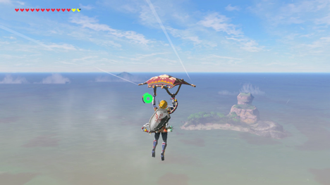
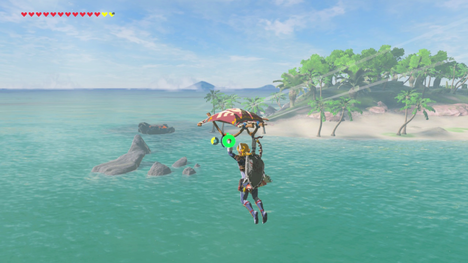
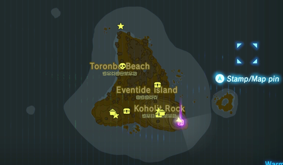
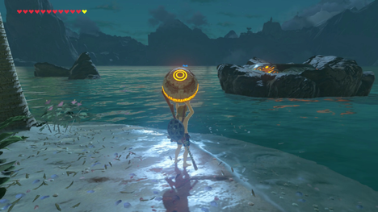
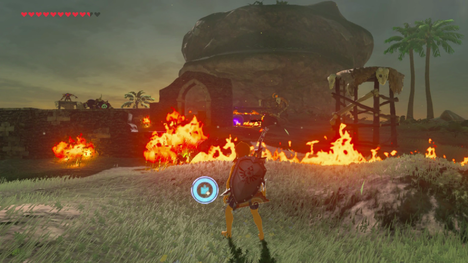
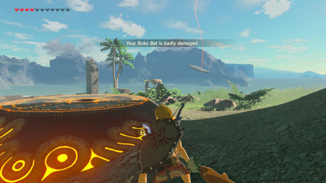
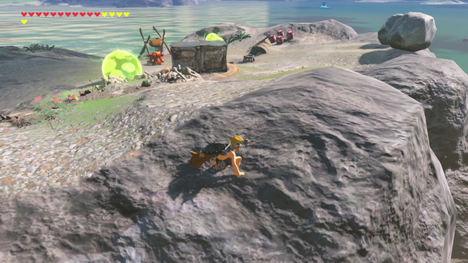
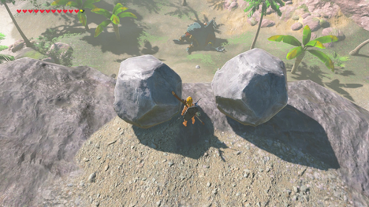
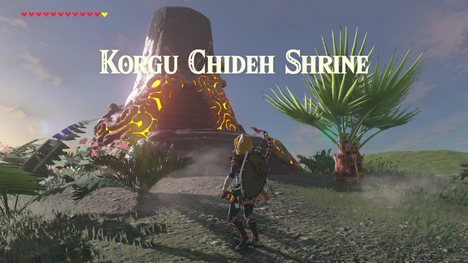

陷于黄昏在塞尔达传说中的42个神社任务之一：荒野之息。 成功完成这个神社任务揭示了在法隆地区隐藏的Korgu Chideh神社。
要开始这个神社的任务，你只需要踏上Eventide岛。 你可以使用你的滑翔伞从卡佩斯山上（Cape Cale）的Muwo Jeem神社滑翔到Eventide Island，但是你需要一个升级后的耐力轮（一个或两个部分）或者耐力药水来作为辅助。
 前往这些岩石，首先在上面找到一个宝箱，里面有50卢比。 然后，前往岛上开始试炼。
如果你想让自己陷于黄昏试炼中更加轻松自在，可以尽快站在沙滩上，进入菜单。 丢下你想要使用的几件物品：武器，盾牌等，然后才能继续上岸。 还要考虑吃让你的心和耐力现在增加食物。
一旦你进一步在海滩上，声音会阻止你。 您的库存中的每个物品，包括盔甲，武器，食物 - 字面上的一切 - 将从您的Runes取走。 如果你把物品放在海滩上，你现在可以拿起它们。 保存选项被禁用，所以如果你死了，你将重新开始这个试炼。
您的目标是找到三个古老的球体，并将它们存放在三个接收器中。
下面是Eventide Island的地图。 星星代表接收器，宝箱是球体。 烹点也是准确的。 您可以在岛上找到一些丰盛的食材，完全治愈您，并在自己烹饪时给予额外的心。
Toronbo海滩上的骷髅显示了您可以在找到一些Bokoblin围绕在火堆旁边。 他们就在一堆爆炸桶旁边，所以这是获得一些初始武器和食物的理想场所。 在发出警报之前，用遥控炸弹炸毁桶，大部分（如果不是全部）将被击倒。
然后，到上面地图上的宝箱。 在这里，在博科比林保护的木制结构上有一个圆球。 再次，利用爆炸桶让你获得优势，抓住球，然后朝北到容器。
一旦你可以看到容器，把球投入水中。 使用结冰将其抬起，跳过，然后将其放入插座。 现在到达位于Koholit Rock的球体和容器。 在这里使用爆炸桶带走这里更强的Moblin。 希望强烈的爆能带走大部分的敌人。
这里的容器被岩石板块挡住。 使用时间静止，用重的武器把它砸飞。 在这里放入球体
在前往最后一个球体之前，先你收集的食物做好料理。 您可能需要它来迎接挑战！
你要在通往最后一个插座的路上遇到一个Hinox。 现在潜行过去，并且到达高地的容器那里。 首先在这里清理敌人。 您可以使用磁力符文使用金属箱作为武器对抗他们，导致电ChuChu爆炸并伤害博科布林。
下面的Hinox在其颈部周围带有最后一个球体。解决这个问题的最简单的方法是通过偷偷摸摸爬上他的手，等待他去抚摸自己。当他这样做的时候，你可以从他的鼻子右侧抓住这个球体！
如果你不能成功地偷偷摸摸做到，就可以利用山顶上的这两块巨石来获得优势。你可以把它们推到下面的Hinox上，用时间静止来配合攻击他。从更高的地面射击它的眼睛也很好。当它开始遮挡眼睛，如果你的时间静止符文被升级，你可以用它来锁住他 - 给你一个机会，使其眼睛畅通无阻。
手里拿着天体，把它带到你上面发现的接收器上。在将球放在适当位置之前，请放下您打算保留的任何武器或物品。试用完成后，Eventide上收集的每个项目将从您的库存中删除。在最后一个天体就位的时候，Korgu Chideh神社出现在Koholit Rock的顶端，在岛的东南角。
{kind=link}
{kind=link}
{kind=link}
{kind=link}
{kind=link}
{kind=link}
{kind=link}
{kind=link}
{kind=link}
{kind=link}